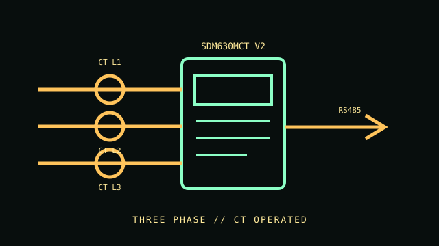

[ THREE-PHASE CT ENERGY METER // SDM630MCT V2 ]
Eastron SDM630MCT V2
Three-phase multifunction DIN-rail meter using current transformers. This record is for the RS485 Modbus CT-operated V2, distinct from Mbus, pulse and multi-tariff variants.

VARIANT CONTROL: Nominal voltage and auxiliary supply vary by order variant. Confirm the exact nameplate, supply option, CT ratio and revision before connecting.
Specifications & compatibility
| Exact model / function | Eastron SDM630MCT V2, RS485 Modbus, CT-operated three-phase multifunction energy meter. |
|---|---|
| Measured metrics | Voltage, current, frequency, active/reactive/apparent power, power factor, demand and bidirectional active/reactive energy. |
| Voltage / phase | Three-phase, four-wire; nominal 3 × 230/400 V AC. Operating voltage is 80–120% of nominal; auxiliary supply varies by exact version. |
| Current range / accuracy | External CT secondary 1 A or 5 A; set the primary ratio for the installed CT. Standard active-energy accuracy is Class 1; MID variants specify their own class and are not interchangeable. |
| Display / network / output | LCD; RS485 Modbus RTU and pulse output, with register/output behavior defined by the model manual. |
| Form factor | DIN-rail mounted enclosure for a three-phase distribution or control panel. |
| Host compatibility | RS485 Modbus RTU-compatible host, PLC, logger or building monitor; no operating-system-specific host requirement. |
| Electrical safety | Install according to the exact V2 manual and local electrical code. Match the CT secondary, polarity, phase and auxiliary supply; use qualified electrical personnel and isolate circuits before wiring. |
Installation & archival notes
- Document nominal voltage, auxiliary supply, CT ratio, phase configuration, communication settings and manual revision.
- Do not connect CT secondary wiring using instructions for the direct-measurement SDM630 variant.
- Metering does not provide overcurrent protection or electrical isolation.
Manufacturer sources
- Eastron — SDM630MCT product pageModel family, CT operation and interface information.
- Eastron — SDM630MCT series datasheetInput, supply and measurement specifications; choose the matching V2 variant.
- Eastron — SDM630MCT V2 family user manualModel-revision wiring, configuration and operating limits.